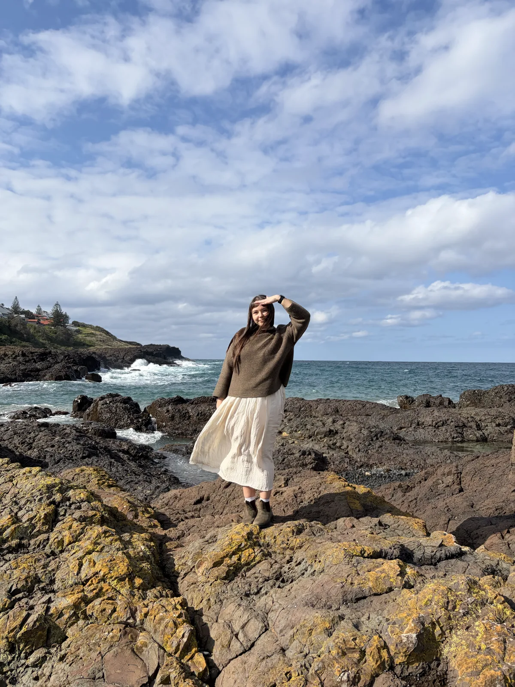
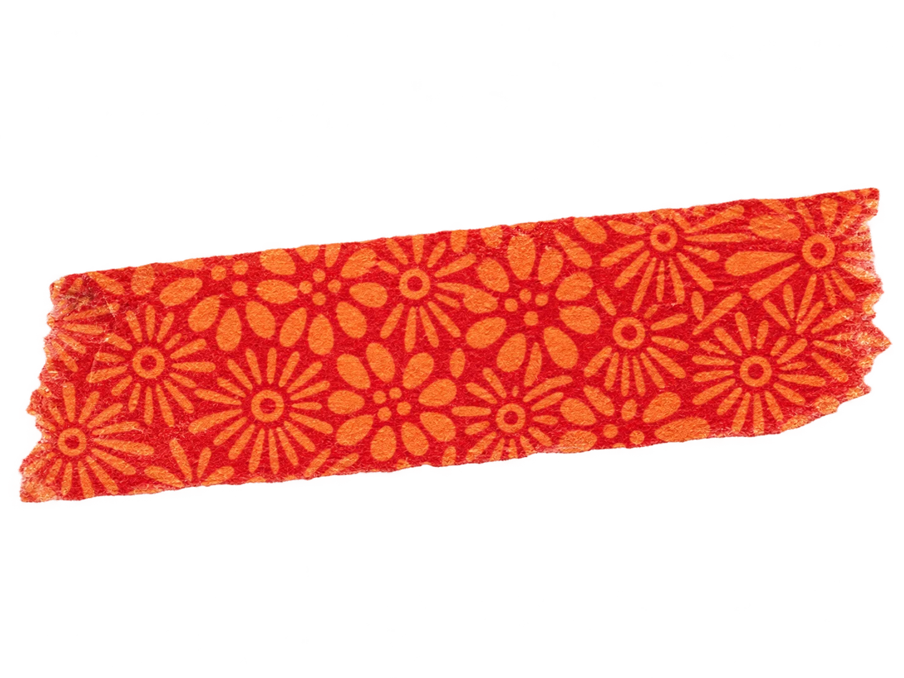
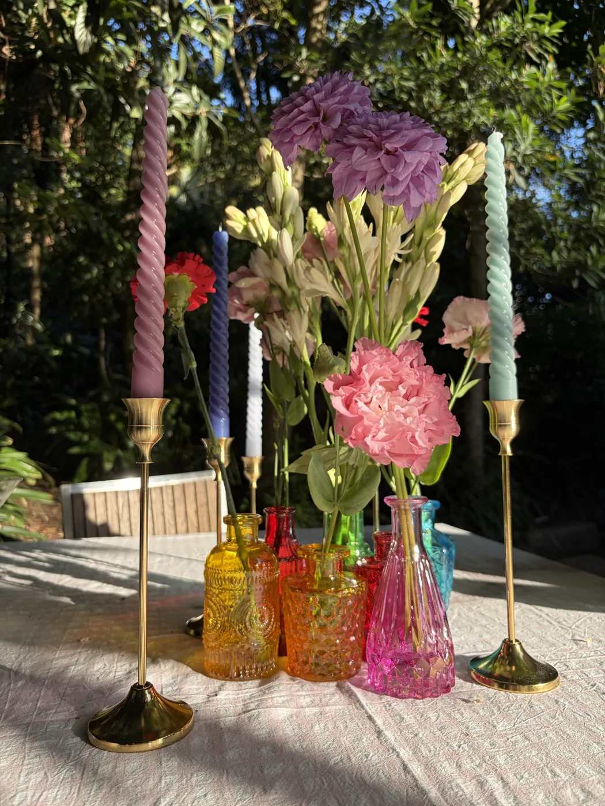
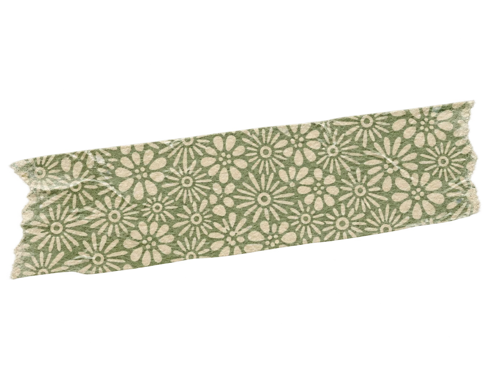
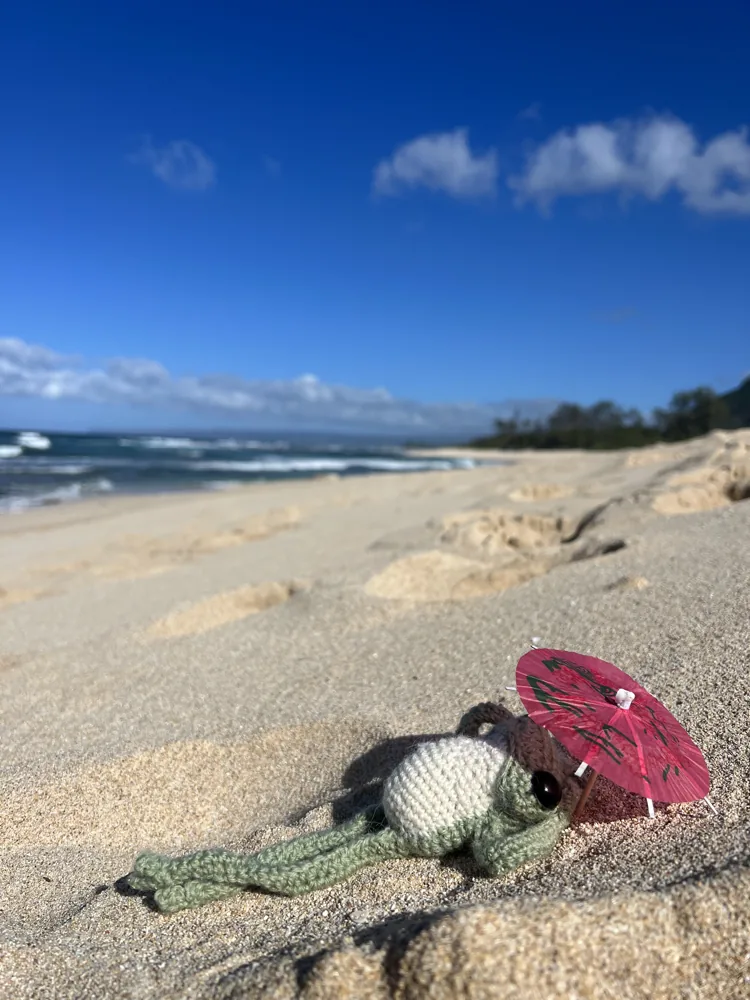
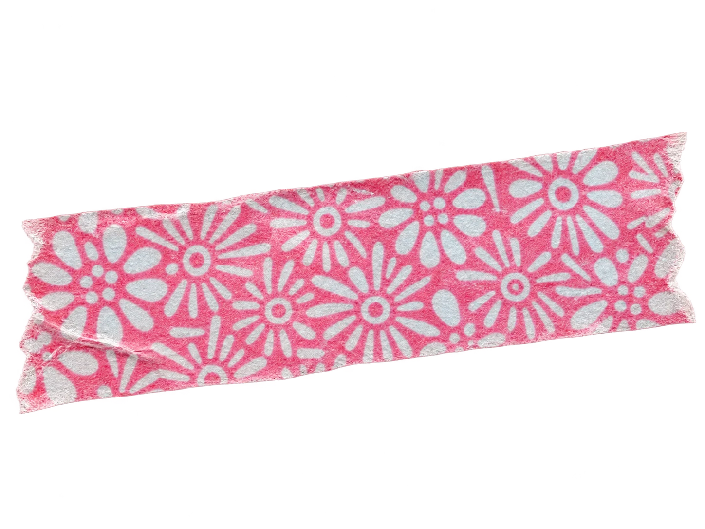

From Craft to Code
Creating things has always been my favorite way to solve problems. What started as a love for handmade projects has evolved into a passion for thoughtful design and bringing ideas to life through code. Although my career has changed course from healthcare to software development, my purpose has remained the same: improving people’s lives through meaningful solutions.






Beyond the Screen
I’ve always loved creating things and I’m usually in the process of making something. Outside of software development, I enjoy designing and building miniature furniture and display scenes, sewing, painting, drawing, crochet, embroidery, and mixed-media projects. I also love curating themed parties and experiences because I enjoy creating worlds people can step into.